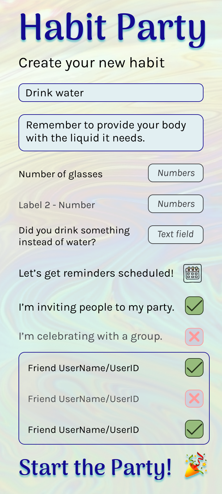

Service Design
This service is in development. If you would like to participate in user research or user testing, please contact me.
Let's make a Habit Party! - Development Process
Inspiration and Intent
The inspiration for the Habit Party service started with a group of friends who wanted to encourage each other in an event. The event was sponsored by Jeannette Maw, creator of the Good Vibe University (GVU). Everyone would log their daily habit. At the end of the month, everyone who had completed twenty-five days successfully would receive a prize in addition to their personal satisfaction of having created a new habit. We looked at apps and considered trying to use the member forums, but nothing would do what we needed. We ended up using a shared spreadsheet, but that was fraught with problems.
I kept my eye out for another app for future events. I personally like keeping track of my successes, and I like being social sometimes but not all the time. Even after months of looking, I still wanted something different.
This birthed the idea of Habit Party, a service I would like to offer on the web, Android, and iOS. I have a developer for the web and Android services. The iOS development is a future goal. The first iteration will be for the web since that can be accessed on all devices.
User Limitations
The primary user group for this service are the members of GVU. However, other potential groups include my own family, writing groups and friends, and physically active groups. The possibilities continue, but these groups provide different slices of society. Keeping them in mind will broaden the usefulness of the service.
Features requested include:
- Privacy - some individuals are very private yet want to collaborate on one or two tasks. This was also a criticism in some existing options.
- Commenting - some individuals want to share comments. For GVU, commenting was specifically requested.
- Totalling counts - writers keep track of words written and want these added together. Walkers keep track of steps, runners keep track of miles or kilometers, and so on.
- Notes - adding a note to a habit can be helpful in a variety of scenarios.
- Individual Habits - some individuals want to share their habit in a limited way, just allowing friends and family to encourage them directly.
- Groups - multiple people creating the same habit with the ability to encourage each other.
- Events - Habits over a specific timeframe, such as NaNoWriMo or Couch25K, with individual customization of the goal.
Dependencies
These are explored in more detail on the Figma Board. Some basic dependencies are listed below.
- To participate in any way, an individual must have a user in Habit Party.
- Users must mutually accept requests to connect.
- A group is created by one user and that user can accept or deny requests to join the group.
- Habits are connected to an individual or group.
- Each habit has two numeric fields and one text field. Each field has a label.
- Comments are connected to a habit.
- Habit names and field labels are editable but the edit is retroactive. A new habit must be created if the individual wants the old habit information saved.
- Events are habits inside groups that includes an additional field editable by the individual.
What does this look like?
Check out the Figma Board to see the design and design process. Trello is the project management app I used. If you want to view that, please message me.
Challenges
Habit apps and tracking apps already exist. Some apps include a social function. However, the social function is often either limited or lacks the ability to protect a user's privacy. Resolving each of these in one service is a complex task. Additionally, the functionality of a collaborative app involves groups. However, this is also an advanced stage of development. Minimum viable project definitions may be difficult to define. Current ideas are sketched below.
- MVP Zero may be a clickable prototype for user testing.
- MVP One might be a web service that allows collaborative habits but not group functionality.
- MVP Two would provide the original intent of the service.
Let's make a Habit Party! - Join the Party
Habit Party is a service where you create habits and track them.
You can also be social if you want to - but a party of one can be fun and satisfying. If you share your habit with people, they can comment and encourage you inside your habit. Want a bigger party? Make a group and share a habit or create an event where everyone gets to name their own habit. Whether the group is sharing a habit or participating in an event, encouragement can be given and received inside that habit or event.
What do you want to track?
The possibilities are endless. Each habit has two number fields and one text field. The number fields can be labeled and add together, providing week-to-date, month-to-date, and year-to-date totals.
- Are you in a writing group for NaNoWriMo? Count the words you write, pages you edit, or share your excuse - or all three!
- Do you want to track how many cups of water (or coffee, juice, etc.) you drink? Use one field for coffee before noon and the other for after.
- Why not count the number of minutes you meditate each day and which type of meditation you practiced?
- Does your accountant want to know how many miles or kilometres you drove each day, along with locations?
- Which food is your pet reacting to?
- How much sleep are you getting and how rested are you when you get up?
- Have you been tracking your own food in your fav nutrition app? Get double credit and that extra encouragement in your Habit Party comments.
Collective Success
Encourage yourself, let others give you a boost, or share inspiration with your friends. Each habit, group, and event has threaded comments. Add an emoji to a comment for some extra fun. We all know how one comment can keep you on that path.
Privacy
Protecting your ability to control who sees your habits is critical.
You decide if groups see your username. Yes, you can still attend the group's habit parties. You'll just be wearing a mask, metaphorically speaking. You can even hide your avatar. Default, generic options will be visible instead of your personal selections for username and avatar. If you identify yourself, or someone else identifies you, that's outside of our control. (If humans were better able to manage themselves or even just keep compassion top of mind, this service wouldn't be needed.)
As much as we want you to be in control of your presence, remember that nothing can truly be removed from the internet, and that includes this service.
If you see a way for us to improve privacy, please let us know. We believe you shouldn't need to give away your information to random strangers to use our service. The information you share with us is protected, and we respect your rights.
Sarah's Fictional User Story
Read how one young woman enjoyed finally reaching her goals after starting to use Habit Party.
Legal stuff: Prototypes in this project currently uses icons from Icons8 and an image by Alexas_Fotos from Pixabay.